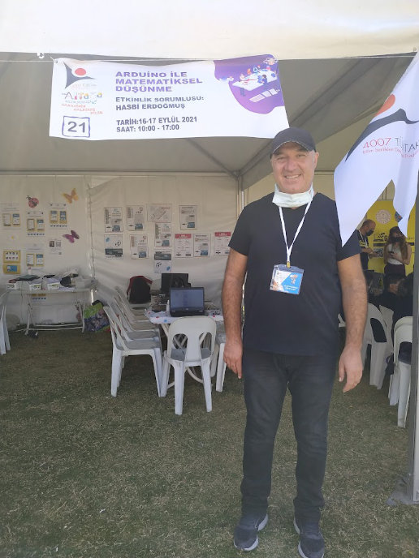
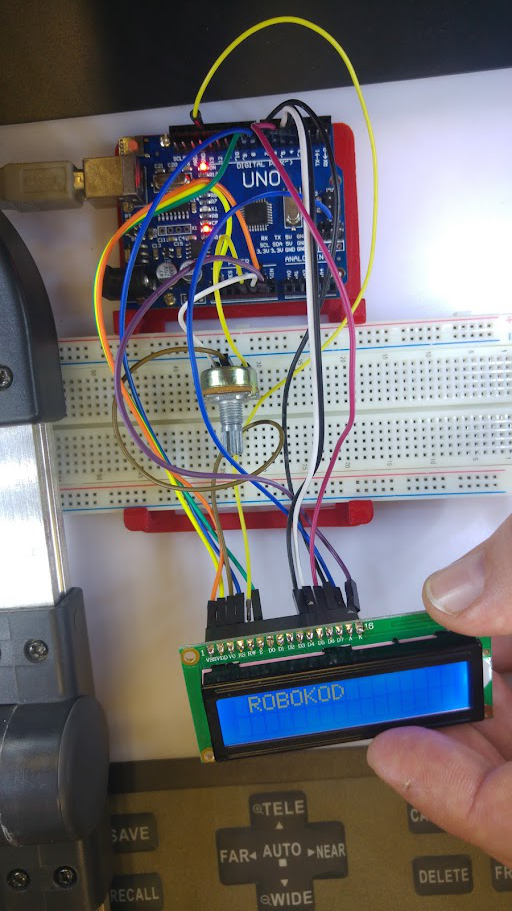

FİZİKSEL PROGRAMLAMA
Kodun Somut Hali
Sadece ekranda değil, gerçek dünyada da çalışan kodlar... Öğretmen ve öğrencilere yönelik düzenlediğim Arduino, Micro:bit ve mBlock eğitimleri ile üretimi ve tasarımı merkeze alıyoruz.

Arduino ile Matematiksel Düşünme 4007 Aliağa Bilim Şenliği

Micro:bit ile Akıllı Cihazlar
Dahili sensörleri ve led matrisi ile öğrencilerin en hızlı sonuç aldığı, giyilebilir teknolojiler ve oyun tasarımına kapı aralayan BBC Micro:bit projeleri.

mBlock ile Yapay Zeka ve Robotik
Scratch tabanlı yapısıyla kodlamaya kolay giriş. Yapay zeka eklentileri (görüntü işleme, ses tanıma) ile zenginleştirilmiş yeni nesil blok tabanlı kodlama eğitimleri.